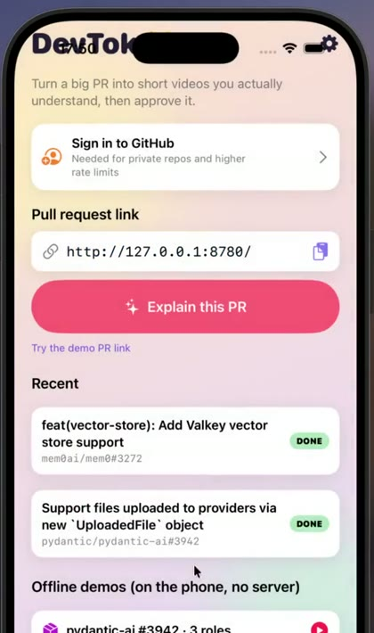
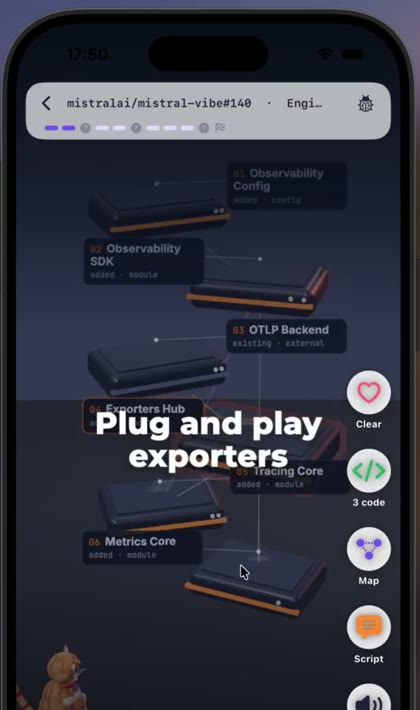
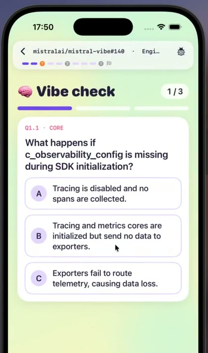
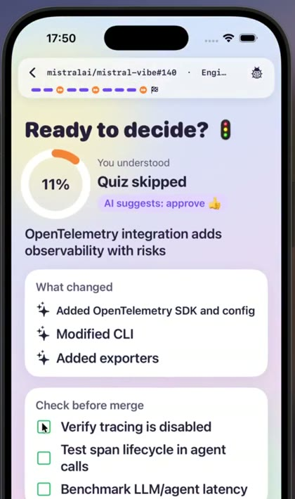

Agents write the code.
We prove it's safe.
Built at Le Chonk in London
CatWalk records what every agent did, proves the change is safe by attacking a local copy of your app, and explains it to the whole team in 60 seconds of video.
Hello!
I'm CatWalk CatWalk
Nobody reads a 3,000-line pull request. Security tools flag fifty maybe-issues, so people learn to ignore them. I only speak when an attack actually works.
- 14files scanned in one real run
- 1suspect, proven by attack
- 141seconds from start to fixed
- 0findings on the re-scan
How it allFits together
Select a block to see what it does.
Remember whatEvery agent did
Agents work in a shared Tonk space. Hooks in the harness write down every turn: the prompt, the answer, the files and the full diff. The agent does not have to cooperate.
Hooks, not good manners
At the end of every turn a hook writes one change record into the local copy of the space. No network on that path; the space syncs only at checkpoints.
One space, many agents
Roles such as builder and security are installed on the space and coordinate through it. No agent messages another directly.
vigil installgives the security role Vigil.Decisions are never edited
A change of mind is a new decision that replaces the old one. That is what lets you ask what was decided at any point in time.
It proves itBefore it speaks
Vigil is a security skill for Mistral Vibe. A rule match is only a suspect. Something counts only when an attack works against a local copy of your app.
Scan
SUSPECTDeterministic rules, no model. A match is only a suspect.
Explain
SUSPECTMinistral 3B runs on your laptop through Ollama and explains the suspect in plain words.
Attack
PROVENThe Detective, a Mistral Agent on Large 4, picks an attack from an allowlist and runs it against your local app.
Approve
WAITINGEvery fix goes through a gate. Default: auto-apply with re-proof and automatic rollback. Add
--askto require a human click.Verify
BLOCKEDThe same attack runs again. Code decides the verdict from what the app returned, not the model.
Sound on reads the run's real narration lines with your browser's voice. The live page uses Voxtral voices.
# attack: idor_read GET /api/orders/ord_b1 (logged in as alice) -> HTTP 200 {"id": "ord_b1", "user_id": 2, "item": "Le Chonk plush", "total": 29.99, "secret_note": "BOB'***"} # ...fix applied, same request... GET /api/orders/ord_b1 (logged in as alice) -> HTTP 404 {"error": "order not found"}
Proof, not vibes
Mappings are guidance, not a certification.
Loopback only
Attacks go only to the loopback address in the repo's .vigil/target.json. Anything else is refused.
The model never holds the keys
Users, records and passwords come only from that file. The agent cannot read .vigil/ or .env, and never sees or sends them.
No fix without proof
A fix is rolled back automatically if the re-proof still succeeds. A control check confirms the owner can still read their own record, so a broken route cannot look fixed.
One pull requestSixty seconds
DevTok turns a large pull request into short vertical videos with voice, subtitles, a cartoon cat narrator and real code references. A short quiz follows every two videos, then a screen to approve or request changes.
Same pull request, told differently. The phone is an illustration of the feed.
Planned by Large 4
System map, storyboard, scripts, quiz and approval summary. The first video is always the data-flow map tour.
Grounded in the diff
The model only refers to ids we give it. Code re-checks every file and line number against the real diff.
Approve what was proven
Vigil's findings land in DevTok's threat register and on the approval screen: you approve a pull request you understood, and that was proven safe.
From the real app
Captured from our demo run on Mistral Vibe pull request #140.

Paste a PR link
A 60-second reel per role
A quick vibe check
Decide with a checklist
WhereMistral runs
Mistral Agents
Vigil's Detective is an agent on Large 4 with 4 tools, deny-by-default permissions and an approval rule for fixes. Served with agents serve, traced in Studio, and you can chat with it in Vibe Code Web.
Large 4 (Le Chonk)
Picks the attack and writes the fix in Vigil. Plans DevTok's system map, storyboard and approval summary.
Ministral 3B
Vigil's Scout and narrator, local through Ollama. Private code never leaves the laptop.
Voxtral
Gives each Vigil character its own voice, and narrates DevTok's videos.
Vibe
Vigil runs as the /vigil skill. The Tonk recorder hooks into Vibe sessions.
Run itYourself
Vigil needs Node 22.5+, Python 3.12+ and uv. Ollama is optional, for Ministral. DevTok's web app runs from the same repo.
--askrequire a human Approve click--mode mistralhosted Large 4 agent (needsMISTRAL_API_KEY)--no-narrateskip Ministral, run offline
# 1. the target app (terminal 1) cd demo-app; npm install; npm run dev:3001 # 2. Ministral, local (one time; skip to run without it) ollama pull ministral-3:3b ollama create vigil -f harness/Modelfile # 3. Vigil (terminal 2, repo root), then open http://127.0.0.1:8765/ uv run --project engine engine/run.py demo-app
# DevTok web app, then open http://127.0.0.1:8770/
python devtok/pipeline/server.py --port 8770
HonestLimits
What can Vigil prove today?
Two attack types: reading another user's record, and reading without login. New attacks are entries in an allowlist. A clean result means no rule fired, not "secure".
Does DevTok post the approval to GitHub?
No. Approval in DevTok is simulated; nothing is posted to GitHub. The quiz is advisory and never blocks approval.
Can the Tonk recorder turn the history into video?
Not yet. Recording and replay are specified; the replay-to-video step is outlined, not built.
Are the OWASP, NIST and ISO mappings a certification?
No. They are guidance to help a security team read the report.